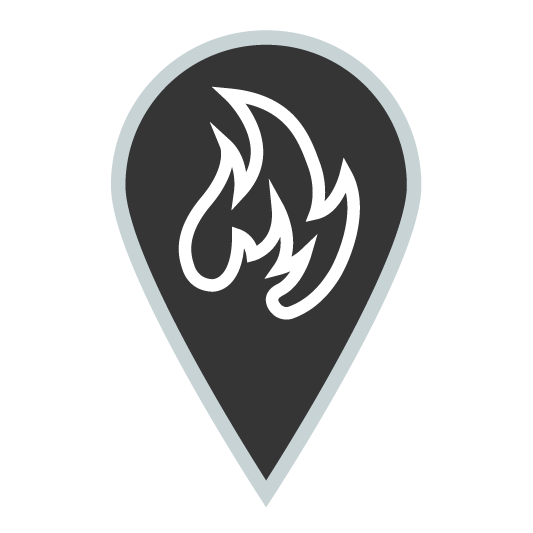
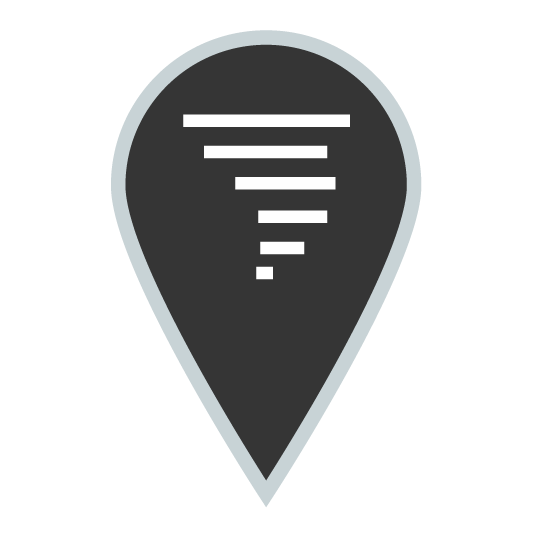
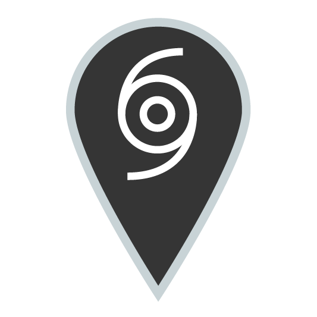
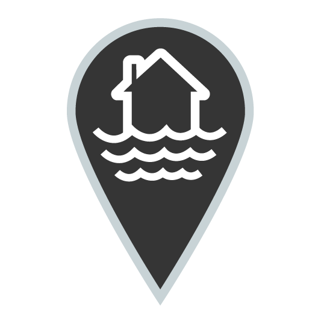
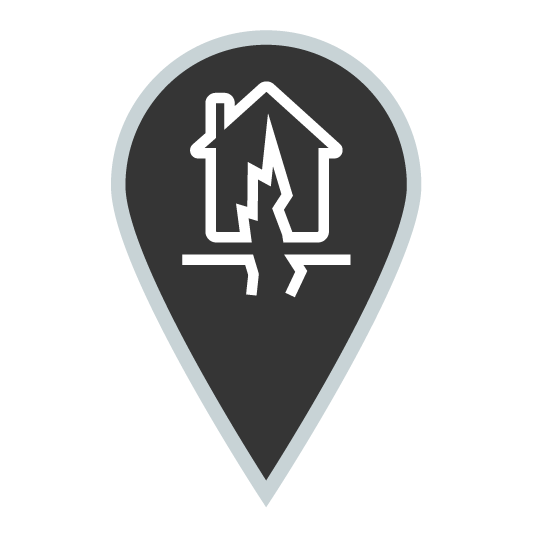
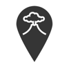

KEY
Fire
Tornado
Hurricane
Flood
Earthquake
Volcano
You appear to be in a disaster zone.
Get help and updates on this situation...
Disaster Zone Needs Your Location.
To display realtime information on disasters around you and across New Zealand, Disaster Zone needs to access your geolocation.
If your browser asks you to allow this, please click Allow.
If this is not an option, ensure that your browser supports geolocation.
Disaster Zone works best in the latest versions of Chrome, Firefox, and Safari.
LIGHT

Flood
Wellington, NZ
Disaster Zone - Help & Support
What's on the map?
Each disaster type is represented by an icon on the map. These icons and the measured scales are explained below.
At any time from the main screen, you can open the overlay key for a simpler explanation of the icons.
Fire
Fire Danger Rating
Tornado
Enhanced Fujita Scale
Hurricane
Saffir-Simpson Scale
Flood
Metres of Water
Earthquake
Moment Magnitude Scale
Volcano
Geonet Volcanic Unrest Scale
What are the colours?
The colours of the icons indicate how severe an event is, based on the scale of measurement given above. The colour range and their meanings are explained below.
What is Disaster Zone?
Disaster Zone is a cross-platform web app, designed to provide relevant, real time information about disasters and natural events as they occur across New Zealand.
Information is presented simply and clearly, allowing the user an immediate overview of any situation, centred around their location.
Lightweight and responsive, Disaster Zone is intended to be accessible any time, anywhere, with the end goal of being an invaluable resource in the event of natural disaster.
Disaster Zone is currently in beta, and heavily under development. Earthquake and volcano reporting works fully, with more disasters on the way, demonstrated as placeholder events to indicate future functionality. There is room for dramatic expansion and continuation beyond the bounds seen here.
Your Data & Privacy
Disaster Zone has been created with your privacy in mind. Your geolocation data is used to help locate you and disasters around you. This information is called back to Google, using their Maps service, and completely anonymously to an online Firebase database for development and testing purposes. This information, while showing a formatted address, retains no other personally identifying information.
Data Providers
Disaster Zone currently gets data from Geonet New Zealand, pulling information on earthquakes and volcanic activity across New Zealand. No personal or identifying data is sent to this provider; all location-based work is handled locally; client side.
In the future, severe weather information (such as cyclones and tornados) can be retrieved from the MetService. Flood information could be accessed from a range of providers, as could fire information.
Geolocation
Location information is accessed using the standard HTML5 JavaScript Geolocation function, which can reliably provide a relatively accurate indication of user location when the site is loaded over WiFi.
Wired LAN internet access usually fails to provide accurate user location, redirecting instead to the nearest ISP junction box. For the best results, we recommend using Wireless.